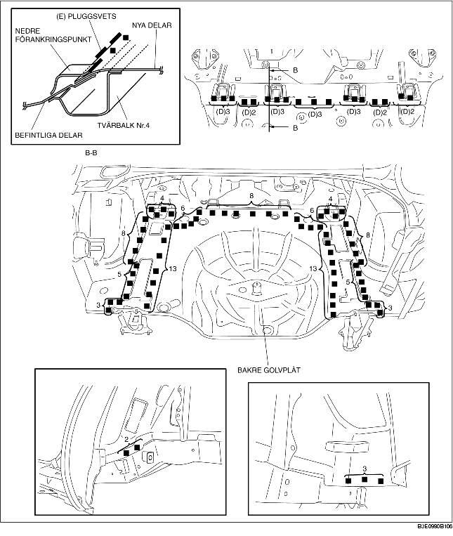

1. Som förberedelse för monteringen, kapa område (A) på den nya bakre golvplåten, borra de 20 punkter som markeras med (B) och demontera sedan den nedre förankringen.
2. Borra de 11 punkter som markeras med (A).
3. Dela på den nedre förankringen vid sammanfogningen med en huggmejsel eller liknande och böj uppåt för att förenkla monteringen.
4. Stryk på punktsvetstätning på de områden där både de nya och befintliga delarnas överlappning kommer att svetsas. Fäst de delar som ska svetsas, och pluggsvetsa de 18 punkter som markeras med (D). Kälsvetsa längs den nedre förankringens kanter, och längs nya och befintliga delar på de punkter som markeras med (E).
5. Svetsa återstående svetspunkter och montera den bakre golvplåten.
